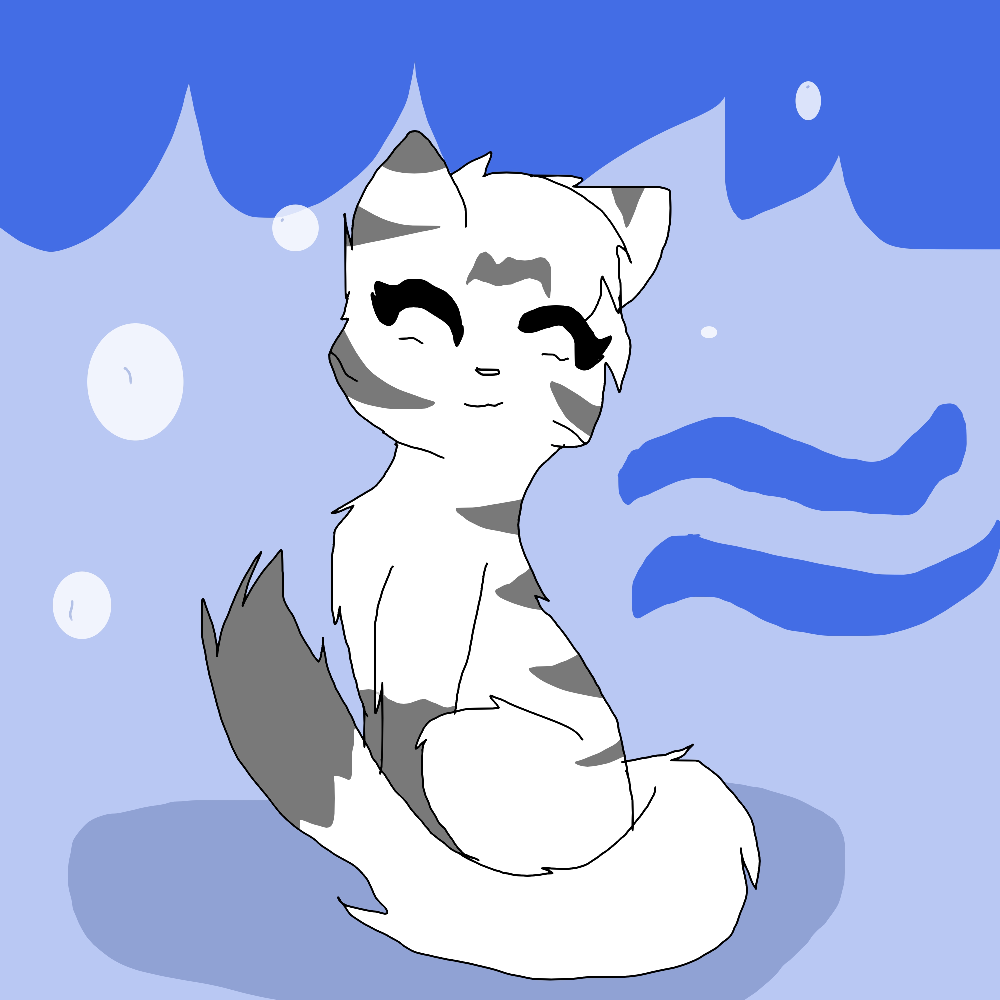

The small bodied cat stops and sits. She licks her paw and clears her throat, she almost looked as though in thought before snapping back. "Alright, I'm Moonsnow, a Riverclanner." She begins her Description as you listen, a grin on your face. A friendly cat found at last

"When things get tough, don't just give up. You always make mistakes, but you'll never make something good if you don't keep trying."
Basic Information
Name:
MoonSnow
Nickname:
Snow, Moon
Age:
Around 10 moons
Gender:
Female
Clan:
Riverclan
Rank:
Warrior
Breed:
Turkish Van cat
Family Information
Mother:
Cloverfrost~Open
Father:
Hawkstare~Open
Siblings:
{Open;Male}{Open;Female}
Mate:
Open
Crush:
Open
Kits:
N/A
Bloodline:
She is not clanborn as she was born as a kittypet, but joined the clan later.
Scent:
Like wildflowers and honey
Appearance and Personality Information
Appearance:
MoonSnow is a medium haired white she-cat with a long length tail. She has a dark gray tail tip and stripes on her back and front legs as well. Her eyes are a sort of blue-purple. They are more or less shiny? Sort of metallic.
Personality:
Moon is a sweet and shy cat with a heart big enough to prove it. She loves kits, she really does. But.. There are times when she runs into kits who are so annoying. They won't leave you be, and if you even dare touch them to scoot them away, there comes the water works. That simply breaks Moon to the point where she too starts crying.
Strengths:
Able to swim well, despite her fur length. Luckily it is not thick.
Weaknesses:
She cannot climb trees. She is terrified of heights. She can get up to around two cats tall, but any taller and she gets terrified half to death.
Voice
Her voice is Odette from Swan Princess, that soft, but more of a country girl accent if you know what I mean.
History and Relationships
History:
When Moon was a kit, she began to swim everyday. She was a kittypet as well, but... She felt a sort of calling to the forest. Somehow she had to get there in the forest. One day, her owners left the back gate open to the forest. Her chance had come and she raced out the gate and into the freedom it gave. Now she was a forest kittypet. A group of Riverclan cats came from patrol and at first thought her an enemy, but eventually let her join them. The leader helped Moon get rid of her collar by biting it off
Relationships:
~Respect~
Her clan
~Trust~
Hardly a soul, but open if you want to try
~Crush~
Open
~Love~
Open
~Friend~
Open
~Best friend~
Open
~Neutral~
The other three clans
~Unsure~
Open
~Dislike~
Some kits. Some are loud and annoying TBH
~Hate~
Open